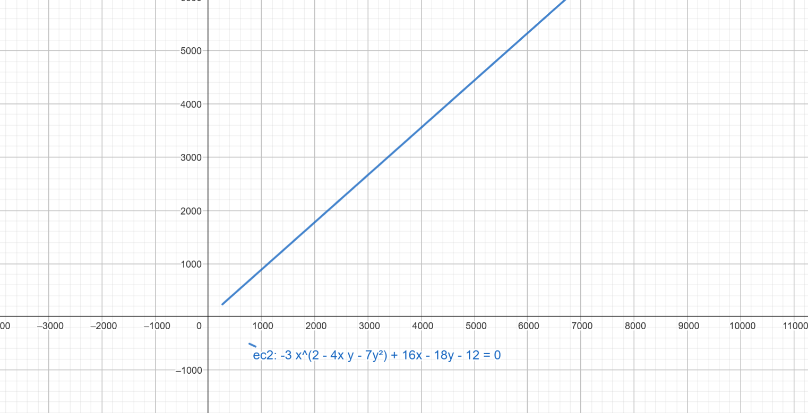

La ecuación general de segundo grado de dos variables se define como:
𝐴𝑥^2+𝐵𝑥𝑦+𝐶𝑦^2+𝐷𝑥+𝐸𝑦+𝐹=0
Donde 𝐴,𝐵,𝐶,𝐷,𝐸 y 𝐹 representan números reales; se asume que 𝐴,𝐵 y C no son al mismo tiempo nulos; de serlo crearían una ecuación de primer grado.
En cursos anteriores se trabajaron casos especiales de la ecuación de segundo grado. Por ejemplo:
Elipse:
8𝑥^2+6𝑥𝑦+5𝑦^2+4𝑦−4=0
Donde 𝐴=5,B=6,C=5,E=4,F=−4.
Hipérbola:
x^2+y^2+12x+8y+36=0
Donde A=1,B=0,C=1,D=12,E=8,F=36.
Parábola:
x^2−2x+12y+37=0
Donde A=1,B=0,C=0,D=−2,E=12,F=37.
Sin embargo, algunas veces se presentan ecuaciones como x^2−y^2=0, donde A=1,B=0,C=−1 y D=E=F=0; al graficarlas, muestran la intersección de dos líneas.
Algunas ecuaciones de segundo grado, al graficarse, se reducen a líneas o puntos en el plano, es decir, sufren una degeneración, por lo que son llamadas ecuaciones degeneradas de segundo grado.
Recuerda que la ecuación general de segundo grado es:
Ax^2+Bxy+Cy^2+Dx+Ey+F=0
Cuando el valor de B=0, se obtiene una ecuación de segundo grado de la forma:
Ax^2+Cy^2+Dx+Ey+F=0
Esta ecuación puede representar una cónica o en su caso una cónica degenerada.
Cuando la ecuación carece del término xy, los criterios son:
Si A y C tienen el mismo signo, es una elipse.
Si A=C, será una circunferencia.
Si A=0 o C=0, se trata de una parábola.
Si A y C tienen signos contrarios, será una hipérbola.
Ejemplo 1:
Género Elipse
Si los términos cuadráticos tienen el mismo signo y cuando los coeficientes son iguales, se trata de una circunferencia:
x^2+y^2=16 𝑦 x^2+9y^2−4x−8=0
Ejemplo 2:
Género Parábola
Tiene un solo término cuadrático:
x^2−12x−16y−60=0
Ejemplo 3:
Género Hipérbola
Los términos cuadráticos tienen signos contrarios:
x^2−y^2=1
5x^2−y^2−10x+6y−5=0
Cuando se tiene una ecuación de segundo grado en la que 𝐵≠0, los coeficientes permiten identificar el tipo de cónica que se presenta. Esto se hace calculando el valor de:
I=B^2−4AC
Según el valor que se obtenga de 𝐼, se puede definir de qué lugar geométrico se trata:
Si B^2−4AC < 0, es una elipse.
Si B^2−4AC=0, es una parábola.
Si B^2−4AC>0, es una hipérbola.
Ejemplo 1: Determina la naturaleza de la cónica
x^2+16y^2+8xy−4x−16y+7=0
Solución:Al analizar la ecuación, los valores que se tienen son:A=1,B=8,C=16.
De acuerdo con los criterios del discriminante, se tiene que:
I=(8)^2−4(1)(16)=64−64 = 0
Por lo tanto, se trata de una parábola.
Ejemplo 2: Determina la naturaleza de la cónica
−3x^2−4xy−7y^2+16x−18y−12=0
Solución:Al analizar la ecuación, los valores que se tienen son:A=−3,B=−4,C=−7.
De acuerdo con los criterios del discriminante, se tiene que:
I=(−4)^2−4(−3)(−7)=16−84=−68 < 0
Por lo tanto, se trata de una elipse.

Ejemplo 3: Determina la naturaleza de la cónica
4x^2−24xy+11y^2+56x−58y+95=0
Solución:Al analizar la ecuación, los valores que se tienen son:A=4,B=−24,C=11.
De acuerdo con los criterios del discriminante, se tiene que: